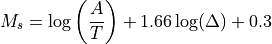

Ms_20¶
Surface wave magnitude measured at around 20 s
Description¶
Ms_20 is the surface wave magnitude measured on the vertical component at around 20 s period in accordance with the IASPEI standards.
Amplitude¶
The Ms_20 amplitudes are calculated on vertical-component displacement seismograms corrected for the instrument response of a WWSSN_LP seismograph.
Station Magnitude¶
Ms_20 is the surface-wave magnitude at 20 s period based on the recommendations by the IASPEI magnitude working group issued on 27 March, 2013 (IASPEI [46]).

with
A: WWSSN_LP corrected ground displacement in units of nm measured on the vertical-component seismogram as the maximum absolute trace amplitude of a surface wave at periods between 18 s and 22 s,
T: period of the surface wave in seconds.
The term Ms_20 is chosen in accordance with the IASPEI standard as of 2013 (IASPEI [46]). Alternatively, the term Ms(20) may be used.
Amplitude unit in SeisComP: nanometer (nm)
Time window: 0 s - distance (km) / 3.5 km/s + 30 s
Period range: 18 s - 22 s, configurable:
magnitudes.Ms_20.lowerPeriod,magnitudes.Ms_20.upperPeriodDefault distance range: 20 - 160 deg, configurable:
magnitudes.Ms_20.minDist,magnitudes.Ms_20.maxDistDepth range: <= 100 km, configurable:
magnitudes.Ms_20.maxDepth
Network magnitude¶
By default, the trimmed mean is calculated from the station magnitudes to form the network magnitude. Outliers below the 12.5% and above the 12.5% percentiles are removed before the calculation.
Configuration¶
Adjust the configurable parameters in global bindings in the Ms_20 section. Add Ms_20 to the list of computed amplitudes and magnitudes in the configuration of scamp and scmag and in scesv or scolv for visibility.